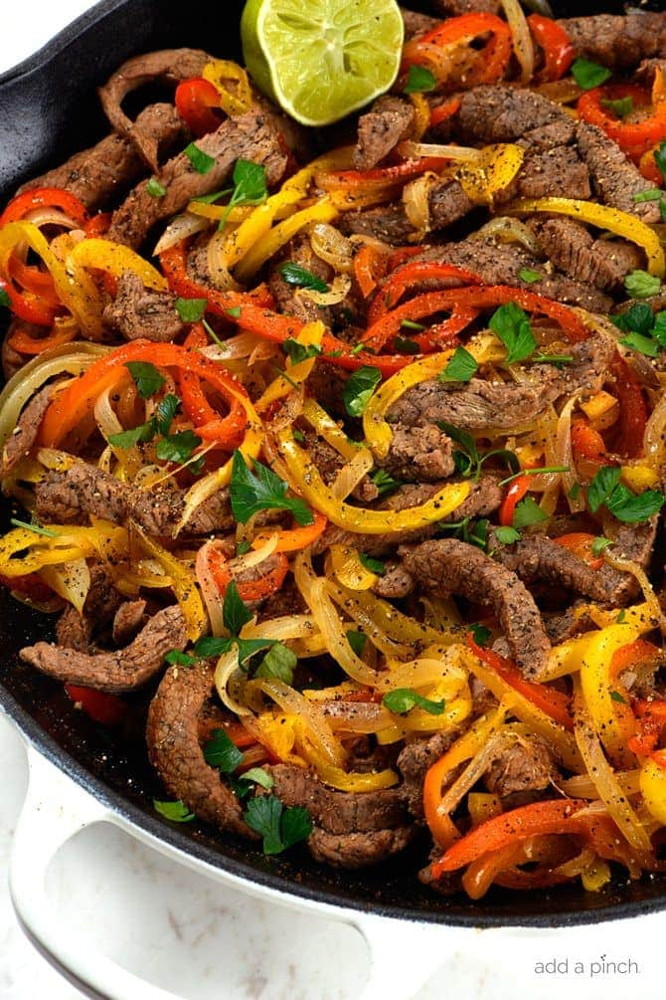

Steak Fajitas

Description
Sizzling hot and bursting with flavor, these Steak Fajitas are a Tex-Mex favorite that's sure to spice up your dinner routine. Tender strips of marinated steak are cooked to perfection alongside colorful bell peppers and onions.
Served with warm tortillas and your favorite toppings, these fajitas offer a customizable meal that's perfect for family dinners or casual entertaining. The combination of juicy steak and smoky vegetables creates a mouthwatering dish that's both satisfying and fun to eat.
Ingredients
- 1 lb flank steak, sliced against the grain
- 2 bell peppers (mixed colors), sliced
- 1 large onion, sliced
- 2 tbsp olive oil
- 2 cloves garlic, minced
- 1 tsp cumin
- 1 tsp chili powder
- Salt and pepper to taste
- Lime wedges for serving
- Warm tortillas
Steps
- Marinate steak with olive oil, garlic, cumin, chili powder, salt, and pepper for 30 minutes
- Heat a large skillet or griddle over high heat
- Cook steak for 3-4 minutes per side, then remove and let rest
- In the same pan, sauté peppers and onions until tender-crisp
- Slice the steak thinly
- Combine steak slices with the peppers and onions
- Serve hot with warm tortillas and lime wedges